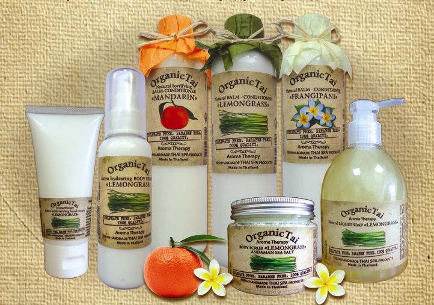

Тайские шампуни для волос Organic Tai (Органик Тай)
Органик Тай – это шампуни ручной работы, которые создают по древним храмовым рецептурам, изобретенным мастерами тайского массажа.
Такую косметику изготавливают при низкотемпературном режиме, что позволяет сохранить максимум целебных свойств и энергии растений.
Косметика Organic Tai состоит из натуральных органических ингредиентов, не содержит ни консервантов, ни парабенов, ни сульфатов (SLS, SLES и подобных). В состав не включают отдушки и красители. Шампуни Органик Тай, как уверяет производитель, основаны на уникальных формулах со значительной концентрацией натуральных экстрактов, эфирных масел.
Потребителям изготовитель обещает, что продукция поразит эффективностью, очарует притягательным ароматом, порадует экономичностью.
Способ применения:нанести на мокрые волосы, вспенить, смыть. В случае попадания в глаза промыть водой.
| Тип кожи головы | Все типы кожи |
| Тип волос | Нормальная |
| Тип волос | для всех типов |
| Комплектация | шампунь |